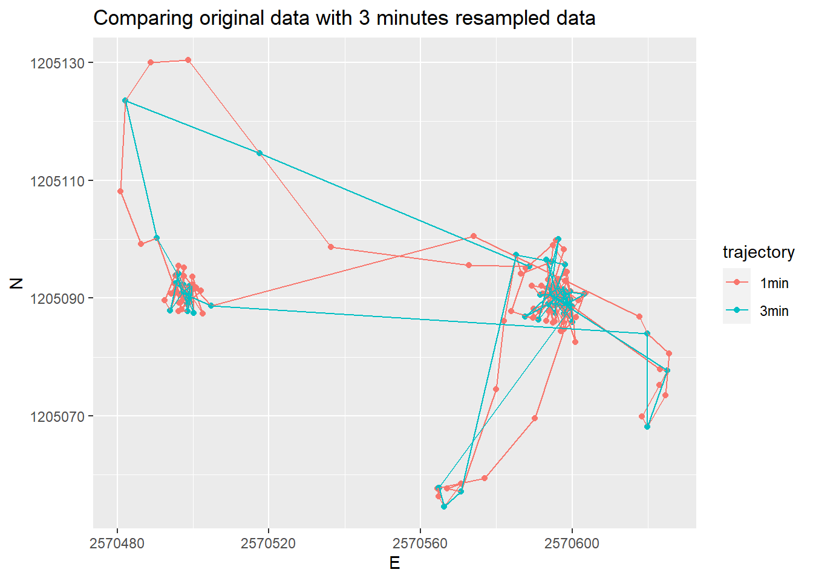
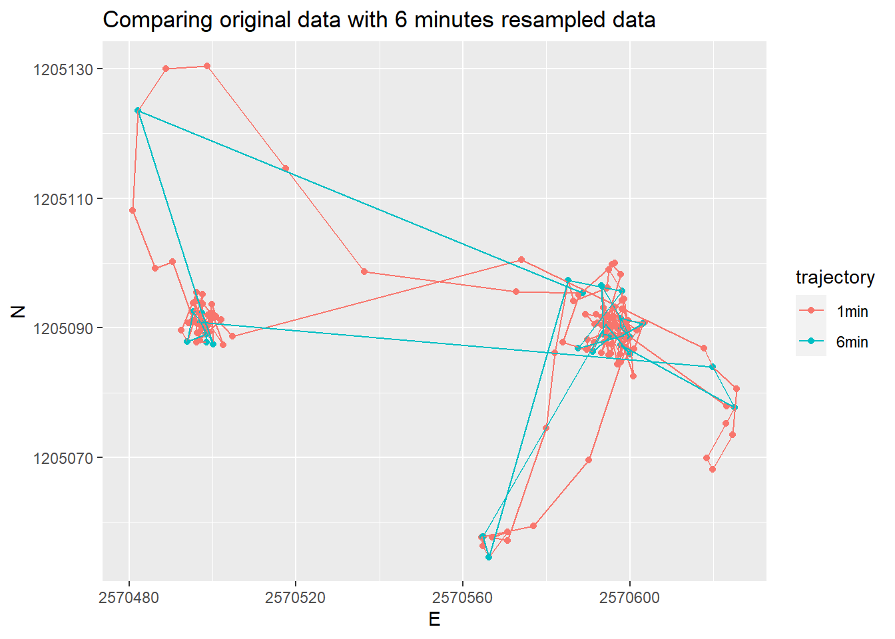
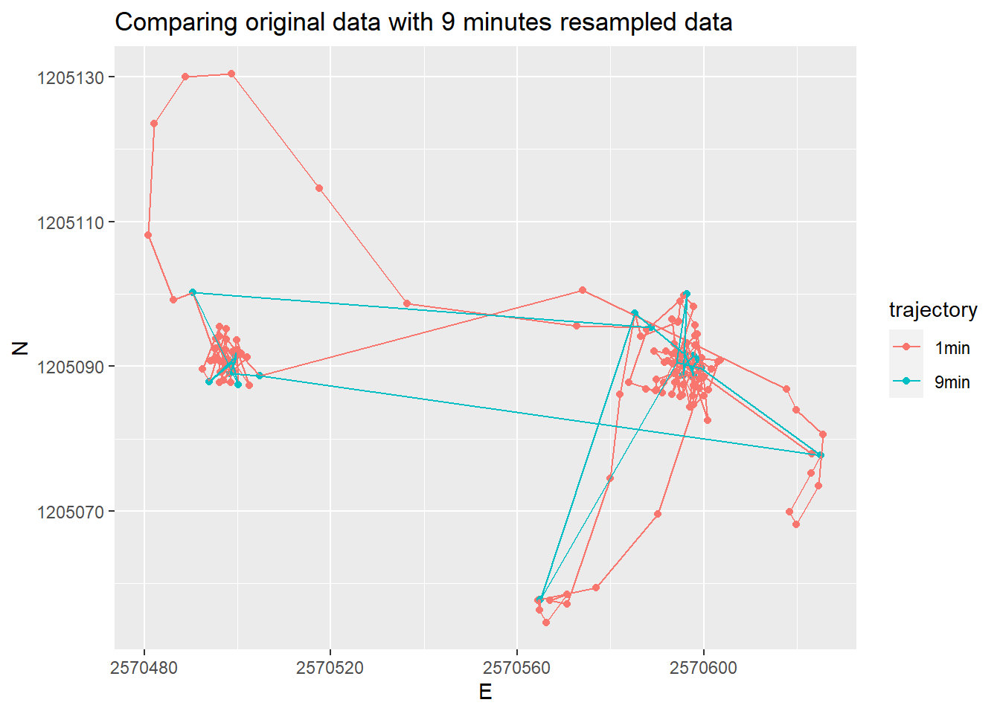

Exercise 2 - Computational Movement Analysis: Patterns and Trends in Environmental Data
1. Information & Metadata
1.1 Information
Study program: MSc in Environment and Natural Resources FS23
Module: Computational Movement Analysis: Patterns and Trends in Environmental Data
Course: R Exercise 2 - Week 2
Lecturers: Patrick Laube (laup), Nils Ratnaweera (rata) & Dominic Lüönd (luoe)
Authors: Lukas Bieri (bieriluk)
1.1 Structure R-Project
The following project was created for the exercise: cma-week2-rexercise
Data was stored in the folder “datasets”.
Code and explanations in this Quarto-File where stored and submitted via the public GitHub Repo “bieriluk/cma-week2”: https://github.com/bieriluk/cma-week2.git
1.2 Data
Data for the exercise was provided by the teaching staff via the plattform “Moodle”.
The data originates from the ZHAW Research Projekt “Using an acoustic signal to prevent wild boars from damaging crops” https://www.zhaw.ch/en/about-us/news/news-releases/news-detail/event-news/using-an-acoustic-signal-to-prevent-wild-boars-from-damaging-crops/
Information on the R Exercise can be found here: https://computationalmovementanalysis.github.io/FS23/
These R Exercises are created by Patrick Laube, Nils Ratnaweera, Nikolaos Bakogiannis and Dominic Lüönd for the Course Computational Movement Analysis and are licensed under Creative Commons Attribution 4.0 International License.
1.4 Used Software
R version 4.2.1 (2022-06-23 ucrt) – “Funny-Looking Kid” Copyright (C) 2022 The R Foundation for Statistical Computing Platform: x86_64-w64-mingw32/x64 (64-bit)
RStudio 2023.03.0+386 “Cherry Blossom” Release (3c53477afb13ab959aeb5b34df1f10c237b256c3, 2023-03-09) for Windows Mozilla/5.0 (Windows NT 10.0; Win64; x64) AppleWebKit/537.36 (KHTML, like Gecko) RStudio/2023.03.0+386 Chrome/108.0.5359.179 Electron/22.0.3 Safari/537.36
Gitfor WindowsVersion 2.40.1
2. Task 1: Import your data
2.1 Preparation
In Preparation: Restart R and clear console.
Then: Load necessary functions
library("readr") # to import tabular data (e.g. csv)
Warning: Paket 'readr' wurde unter R Version 4.2.2 erstellt
library("dplyr") # to manipulate (tabular) data
Warning: Paket 'dplyr' wurde unter R Version 4.2.2 erstellt
Attache Paket: 'dplyr'
Die folgenden Objekte sind maskiert von 'package:stats':
filter, lag
Die folgenden Objekte sind maskiert von 'package:base':
intersect, setdiff, setequal, union
library("ggplot2") # to visualize data
Warning: Paket 'ggplot2' wurde unter R Version 4.2.2 erstellt
library("sf")
Warning: Paket 'sf' wurde unter R Version 4.2.2 erstellt
Linking to GEOS 3.9.3, GDAL 3.5.2, PROJ 8.2.1; sf_use_s2() is TRUE
2.2 Import wild boar data & convert with to spatial data
Rows: 51246 Columns: 6
── Column specification ────────────────────────────────────────────────────────
Delimiter: ","
chr (2): TierID, TierName
dbl (3): CollarID, E, N
dttm (1): DatetimeUTC
ℹ Use `spec()` to retrieve the full column specification for this data.
ℹ Specify the column types or set `show_col_types = FALSE` to quiet this message.
The time of tracking differs between the individuals, the overlap for the most part, whereas tracking of “Sabi” starte much earlier than “Rosa” and “Ruth” and the tracking of “Rosa” ended earlier than “Ruth and”Sabi”. The time frame overall is between End of August 2014 till the End of July 2015. No relevant / longer gaps acc. to a quick plot.
3.3 What is the temporal sampling interval between the locations?
The time between samples is mostly around 900s or 15min (median = 903s), however this an vary in both directions (min = 12s, max = 60367s) but a good number of timelags are significantly longer (mean = 1407.72s).
The histogram shows groups of sampling regimes, so the sampling device was most likely set to sample every 5min, 15min, 30min, 45min, 60min and 75min depending on certain parameters.
If we look at individual days, we see that the sampling rate is different during day and night, possibly set this way due the boars beeing hidden during the day and come out during the night.
4. Task 3: Deriving movement parameters I: Speed
4.1 Calculate Euclidian Distance
Calculate Euclidian Distance by useing dummy values from the data set first before using all data
Calculate the distance traveled between two consecutive positions (steplength) for the whole data frame (result in m) using the formula for the Euclidean distance and the function lead()
Calculate the speed by dividing distance traveled (steplenth) with time between measements (timelag). Result in m/s.
5. Task 4: Cross-scale movement analysis
Import the caro dataset & make it into spatial data frame:
caro <-read_delim("datasets/caro60.csv", ",")
Rows: 200 Columns: 6
── Column specification ────────────────────────────────────────────────────────
Delimiter: ","
chr (2): TierID, TierName
dbl (3): CollarID, E, N
dttm (1): DatetimeUTC
ℹ Use `spec()` to retrieve the full column specification for this data.
ℹ Specify the column types or set `show_col_types = FALSE` to quiet this message.
caro <-st_as_sf(caro, coords =c("E", "N"), crs =2056, remove =FALSE)caro
Simple feature collection with 200 features and 6 fields
Geometry type: POINT
Dimension: XY
Bounding box: xmin: 2570481 ymin: 1205055 xmax: 2570626 ymax: 1205130
Projected CRS: CH1903+ / LV95
# A tibble: 200 × 7
TierID TierName CollarID DatetimeUTC E N
* <chr> <chr> <dbl> <dttm> <dbl> <dbl>
1 010C Caro 13973 2015-09-15 08:07:00 2570589. 1205095.
2 010C Caro 13973 2015-09-15 08:08:00 2570573. 1205096.
3 010C Caro 13973 2015-09-15 08:09:00 2570536. 1205099.
4 010C Caro 13973 2015-09-15 08:10:00 2570518. 1205115.
5 010C Caro 13973 2015-09-15 08:11:00 2570499. 1205130.
6 010C Caro 13973 2015-09-15 08:12:00 2570489. 1205130.
7 010C Caro 13973 2015-09-15 08:13:00 2570482. 1205124.
8 010C Caro 13973 2015-09-15 08:14:00 2570481. 1205108.
9 010C Caro 13973 2015-09-15 08:15:00 2570486. 1205099.
10 010C Caro 13973 2015-09-15 08:16:00 2570490. 1205100.
# … with 190 more rows, and 1 more variable: geometry <POINT [m]>
Reduce the granularity of sampling interval by selecting every 3rd, 6th and 9th position:
caro_3 <-slice(caro, seq(from =1, to =200, by =3))caro_3
Simple feature collection with 67 features and 6 fields
Geometry type: POINT
Dimension: XY
Bounding box: xmin: 2570482 ymin: 1205055 xmax: 2570625 ymax: 1205124
Projected CRS: CH1903+ / LV95
# A tibble: 67 × 7
TierID TierName CollarID DatetimeUTC E N
<chr> <chr> <dbl> <dttm> <dbl> <dbl>
1 010C Caro 13973 2015-09-15 08:07:00 2570589. 1205095.
2 010C Caro 13973 2015-09-15 08:10:00 2570518. 1205115.
3 010C Caro 13973 2015-09-15 08:13:00 2570482. 1205124.
4 010C Caro 13973 2015-09-15 08:16:00 2570490. 1205100.
5 010C Caro 13973 2015-09-15 08:19:00 2570497. 1205092.
6 010C Caro 13973 2015-09-15 08:22:00 2570499. 1205091.
7 010C Caro 13973 2015-09-15 08:25:00 2570500. 1205087.
8 010C Caro 13973 2015-09-15 08:28:00 2570496. 1205094.
9 010C Caro 13973 2015-09-15 08:31:00 2570497. 1205091.
10 010C Caro 13973 2015-09-15 08:34:00 2570499. 1205091.
# … with 57 more rows, and 1 more variable: geometry <POINT [m]>
caro_6 <-slice(caro, seq(from =1, to =200, by =6))caro_6
Simple feature collection with 34 features and 6 fields
Geometry type: POINT
Dimension: XY
Bounding box: xmin: 2570482 ymin: 1205055 xmax: 2570625 ymax: 1205124
Projected CRS: CH1903+ / LV95
# A tibble: 34 × 7
TierID TierName CollarID DatetimeUTC E N
<chr> <chr> <dbl> <dttm> <dbl> <dbl>
1 010C Caro 13973 2015-09-15 08:07:00 2570589. 1205095.
2 010C Caro 13973 2015-09-15 08:13:00 2570482. 1205124.
3 010C Caro 13973 2015-09-15 08:19:00 2570497. 1205092.
4 010C Caro 13973 2015-09-15 08:25:00 2570500. 1205087.
5 010C Caro 13973 2015-09-15 08:31:00 2570497. 1205091.
6 010C Caro 13973 2015-09-15 08:37:00 2570495. 1205092.
7 010C Caro 13973 2015-09-15 08:43:00 2570494. 1205088.
8 010C Caro 13973 2015-09-15 08:49:00 2570498. 1205089.
9 010C Caro 13973 2015-09-15 08:55:00 2570499. 1205088.
10 010C Caro 13973 2015-09-15 09:01:00 2570498. 1205089.
# … with 24 more rows, and 1 more variable: geometry <POINT [m]>
caro_9 <-slice(caro, seq(from =1, to =200, by =9))caro_9
Simple feature collection with 23 features and 6 fields
Geometry type: POINT
Dimension: XY
Bounding box: xmin: 2570490 ymin: 1205058 xmax: 2570625 ymax: 1205100
Projected CRS: CH1903+ / LV95
# A tibble: 23 × 7
TierID TierName CollarID DatetimeUTC E N
<chr> <chr> <dbl> <dttm> <dbl> <dbl>
1 010C Caro 13973 2015-09-15 08:07:00 2570589. 1205095.
2 010C Caro 13973 2015-09-15 08:16:00 2570490. 1205100.
3 010C Caro 13973 2015-09-15 08:25:00 2570500. 1205087.
4 010C Caro 13973 2015-09-15 08:34:00 2570499. 1205091.
5 010C Caro 13973 2015-09-15 08:43:00 2570494. 1205088.
6 010C Caro 13973 2015-09-15 08:52:00 2570500. 1205091.
7 010C Caro 13973 2015-09-15 09:01:00 2570498. 1205089.
8 010C Caro 13973 2015-09-15 09:10:00 2570505. 1205089.
9 010C Caro 13973 2015-09-15 09:19:00 2570625. 1205078.
10 010C Caro 13973 2015-09-15 09:28:00 2570599. 1205090.
# … with 13 more rows, and 1 more variable: geometry <POINT [m]>
nrow(caro)
[1] 200
nrow(caro_3)
[1] 67
nrow(caro_6)
[1] 34
nrow(caro_9)
[1] 23
Calculate timelag, steplength and speed for these data sets:
caro <- caro |>group_by(TierName) |>mutate(timelag =as.numeric(difftime(lead(DatetimeUTC), DatetimeUTC)*60)) |>mutate(steplength_m =sqrt((E-lead(E,1))^2+ (N-lead(N,1))^2)) |>mutate(speed_ms = steplength_m/timelag)caro
Simple feature collection with 200 features and 9 fields
Geometry type: POINT
Dimension: XY
Bounding box: xmin: 2570481 ymin: 1205055 xmax: 2570626 ymax: 1205130
Projected CRS: CH1903+ / LV95
# A tibble: 200 × 10
# Groups: TierName [1]
TierID TierName CollarID DatetimeUTC E N
* <chr> <chr> <dbl> <dttm> <dbl> <dbl>
1 010C Caro 13973 2015-09-15 08:07:00 2570589. 1205095.
2 010C Caro 13973 2015-09-15 08:08:00 2570573. 1205096.
3 010C Caro 13973 2015-09-15 08:09:00 2570536. 1205099.
4 010C Caro 13973 2015-09-15 08:10:00 2570518. 1205115.
5 010C Caro 13973 2015-09-15 08:11:00 2570499. 1205130.
6 010C Caro 13973 2015-09-15 08:12:00 2570489. 1205130.
7 010C Caro 13973 2015-09-15 08:13:00 2570482. 1205124.
8 010C Caro 13973 2015-09-15 08:14:00 2570481. 1205108.
9 010C Caro 13973 2015-09-15 08:15:00 2570486. 1205099.
10 010C Caro 13973 2015-09-15 08:16:00 2570490. 1205100.
# … with 190 more rows, and 4 more variables: geometry <POINT [m]>,
# timelag <dbl>, steplength_m <dbl>, speed_ms <dbl>
The speed is higher, the lower the sampling rate. What sampling rate is appropriate will depend on the research question to be answered.
Visualize the resampled data sets trajectories
ggplot() +geom_point(data = caro, aes(x = E, y = N, color ="1min")) +geom_point(data = caro_3, aes(x = E, y = N, color ="3min")) +geom_path(data = caro, aes(x = E, y = N, color ="1min")) +geom_path(data = caro_3, aes(x = E, y = N, color ="3min")) +labs(x ="E",y ="N", title ="Comparing original data with 3 minutes resampled data",color ="trajectory" )

ggplot() +geom_point(data = caro, aes(x = E, y = N, color ="1min")) +geom_point(data = caro_6, aes(x = E, y = N, color ="6min")) +geom_path(data = caro, aes(x = E, y = N, color ="1min")) +geom_path(data = caro_6, aes(x = E, y = N, color ="6min")) +labs(x ="E",y ="N", title ="Comparing original data with 6 minutes resampled data",color ="trajectory" )

ggplot() +geom_point(data = caro, aes(x = E, y = N, color ="1min")) +geom_point(data = caro_9, aes(x = E, y = N, color ="9min")) +geom_path(data = caro, aes(x = E, y = N, color ="1min")) +geom_path(data = caro_9, aes(x = E, y = N, color ="9min")) +labs(x ="E",y ="N", title ="Comparing original data with 9 minutes resampled data",color ="trajectory" )

Resampled data at 3min and 6min intervalls still show the trajetories more or less accurate in themes of where the animal went. At 9 minutes of resampling, the trajectories still show all the places where the animal spent a lot of time but loses large movements that where quicker.
6. Task 5 (optional): Deriving movement parameters II: Rolling window functions
Install & load the additional library “zoo”:
#install.packages("zoo")library("zoo")
Warning: Paket 'zoo' wurde unter R Version 4.2.3 erstellt
Attache Paket: 'zoo'
Die folgenden Objekte sind maskiert von 'package:base':
as.Date, as.Date.numeric
[1] -0.27447425 -0.47240500 -0.27026194 0.03262697 0.36750538 0.66982290
[7] 0.51254766 0.49880622 NA NA
rollmean(example, k =4, fill =NA, align ="left")
[1] -0.2300482 -0.3143346 -0.1940029 0.2514365 0.5423363 0.3931043
[7] 0.6010709 NA NA NA
Use the “rollmean” function on the “caro” dataset and visualize:
caro_3_smooth <- caro |>group_by(TierName) |>mutate(speed_ms =rollmean(caro$speed_ms, k =3, fill =NA, align ="left"))caro_3_smooth
Simple feature collection with 200 features and 9 fields
Geometry type: POINT
Dimension: XY
Bounding box: xmin: 2570481 ymin: 1205055 xmax: 2570626 ymax: 1205130
Projected CRS: CH1903+ / LV95
# A tibble: 200 × 10
# Groups: TierName [1]
TierID TierName CollarID DatetimeUTC E N
* <chr> <chr> <dbl> <dttm> <dbl> <dbl>
1 010C Caro 13973 2015-09-15 08:07:00 2570589. 1205095.
2 010C Caro 13973 2015-09-15 08:08:00 2570573. 1205096.
3 010C Caro 13973 2015-09-15 08:09:00 2570536. 1205099.
4 010C Caro 13973 2015-09-15 08:10:00 2570518. 1205115.
5 010C Caro 13973 2015-09-15 08:11:00 2570499. 1205130.
6 010C Caro 13973 2015-09-15 08:12:00 2570489. 1205130.
7 010C Caro 13973 2015-09-15 08:13:00 2570482. 1205124.
8 010C Caro 13973 2015-09-15 08:14:00 2570481. 1205108.
9 010C Caro 13973 2015-09-15 08:15:00 2570486. 1205099.
10 010C Caro 13973 2015-09-15 08:16:00 2570490. 1205100.
# … with 190 more rows, and 4 more variables: geometry <POINT [m]>,
# timelag <dbl>, steplength_m <dbl>, speed_ms <dbl>
caro_6_smooth <- caro |>group_by(TierName) |>mutate(speed_ms =rollmean(caro$speed_ms, k =6, fill =NA, align ="left"))caro_6_smooth
Simple feature collection with 200 features and 9 fields
Geometry type: POINT
Dimension: XY
Bounding box: xmin: 2570481 ymin: 1205055 xmax: 2570626 ymax: 1205130
Projected CRS: CH1903+ / LV95
# A tibble: 200 × 10
# Groups: TierName [1]
TierID TierName CollarID DatetimeUTC E N
* <chr> <chr> <dbl> <dttm> <dbl> <dbl>
1 010C Caro 13973 2015-09-15 08:07:00 2570589. 1205095.
2 010C Caro 13973 2015-09-15 08:08:00 2570573. 1205096.
3 010C Caro 13973 2015-09-15 08:09:00 2570536. 1205099.
4 010C Caro 13973 2015-09-15 08:10:00 2570518. 1205115.
5 010C Caro 13973 2015-09-15 08:11:00 2570499. 1205130.
6 010C Caro 13973 2015-09-15 08:12:00 2570489. 1205130.
7 010C Caro 13973 2015-09-15 08:13:00 2570482. 1205124.
8 010C Caro 13973 2015-09-15 08:14:00 2570481. 1205108.
9 010C Caro 13973 2015-09-15 08:15:00 2570486. 1205099.
10 010C Caro 13973 2015-09-15 08:16:00 2570490. 1205100.
# … with 190 more rows, and 4 more variables: geometry <POINT [m]>,
# timelag <dbl>, steplength_m <dbl>, speed_ms <dbl>
caro_9_smooth <- caro |>group_by(TierName) |>mutate(speed_ms =rollmean(caro$speed_ms, k =6, fill =NA, align ="left"))caro_9_smooth
Simple feature collection with 200 features and 9 fields
Geometry type: POINT
Dimension: XY
Bounding box: xmin: 2570481 ymin: 1205055 xmax: 2570626 ymax: 1205130
Projected CRS: CH1903+ / LV95
# A tibble: 200 × 10
# Groups: TierName [1]
TierID TierName CollarID DatetimeUTC E N
* <chr> <chr> <dbl> <dttm> <dbl> <dbl>
1 010C Caro 13973 2015-09-15 08:07:00 2570589. 1205095.
2 010C Caro 13973 2015-09-15 08:08:00 2570573. 1205096.
3 010C Caro 13973 2015-09-15 08:09:00 2570536. 1205099.
4 010C Caro 13973 2015-09-15 08:10:00 2570518. 1205115.
5 010C Caro 13973 2015-09-15 08:11:00 2570499. 1205130.
6 010C Caro 13973 2015-09-15 08:12:00 2570489. 1205130.
7 010C Caro 13973 2015-09-15 08:13:00 2570482. 1205124.
8 010C Caro 13973 2015-09-15 08:14:00 2570481. 1205108.
9 010C Caro 13973 2015-09-15 08:15:00 2570486. 1205099.
10 010C Caro 13973 2015-09-15 08:16:00 2570490. 1205100.
# … with 190 more rows, and 4 more variables: geometry <POINT [m]>,
# timelag <dbl>, steplength_m <dbl>, speed_ms <dbl>
ggplot() +geom_line(data = caro, aes(x = DatetimeUTC, y = speed_ms, color ="1min")) +geom_line(data = caro_3_smooth, aes(x = DatetimeUTC, y = speed_ms, color ="3min")) +geom_line(data = caro_6_smooth, aes(x = DatetimeUTC, y = speed_ms, color ="6min")) +geom_line(data = caro_9_smooth, aes(x = DatetimeUTC, y = speed_ms, color ="9min")) +labs(x ="time (UTC)",y ="speed in m/s", title ="Comparing derived speed at diferent moving window sizes",color ="Average over x minutes" )
Rows: 14277 Columns: 7
── Column specification ────────────────────────────────────────────────────────
Delimiter: ","
chr (4): user_id, weekday, place_name, transport_mode
dbl (2): lon_x, lat_y
dttm (1): datetime
ℹ Use `spec()` to retrieve the full column specification for this data.
ℹ Specify the column types or set `show_col_types = FALSE` to quiet this message.
mydata
# A tibble: 14,277 × 7
user_id datetime weekday place…¹ trans…² lon_x lat_y
<chr> <dttm> <chr> <chr> <chr> <dbl> <dbl>
1 a77bd18b-2615-4b03-8… 2023-04-11 10:50:01 Tue A3 <NA> 8.53 47.3
2 a77bd18b-2615-4b03-8… 2023-04-11 14:26:22 Tue <NA> Walk 8.53 47.3
3 a77bd18b-2615-4b03-8… 2023-04-11 14:26:22 Tue <NA> Walk 8.53 47.3
4 a77bd18b-2615-4b03-8… 2023-04-11 14:26:32 Tue <NA> Walk 8.53 47.3
5 a77bd18b-2615-4b03-8… 2023-04-11 14:26:42 Tue <NA> Walk 8.53 47.3
6 a77bd18b-2615-4b03-8… 2023-04-11 14:26:51 Tue <NA> Walk 8.53 47.3
7 a77bd18b-2615-4b03-8… 2023-04-11 14:27:00 Tue <NA> Walk 8.53 47.3
8 a77bd18b-2615-4b03-8… 2023-04-11 14:27:09 Tue <NA> Walk 8.53 47.3
9 a77bd18b-2615-4b03-8… 2023-04-11 14:27:18 Tue <NA> Walk 8.53 47.3
10 a77bd18b-2615-4b03-8… 2023-04-11 14:27:27 Tue <NA> Walk 8.53 47.3
# … with 14,267 more rows, and abbreviated variable names ¹place_name,
# ²transport_mode